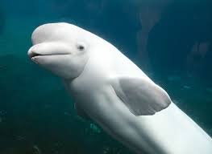
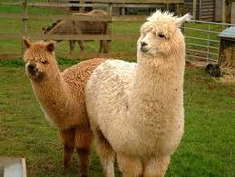
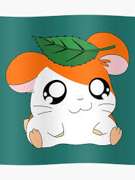
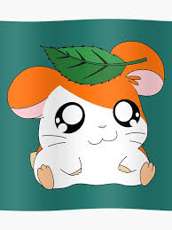
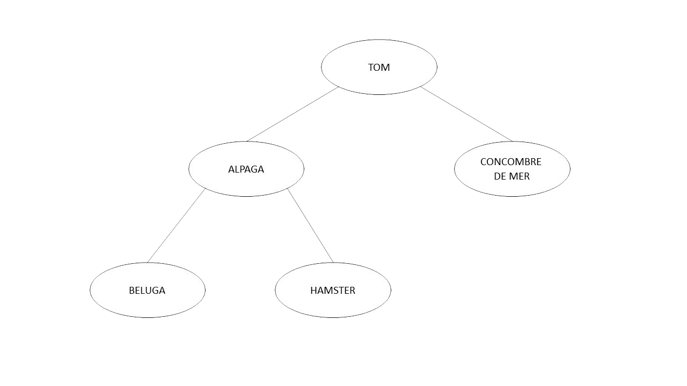

Tom est un peigne gauche
Dès le premier regard, il est aujourd’hui aisé de déterminer que Tom est un peigne gauche et rien d’autre. Mais il fut un temps où sa nature peignesque était encore inconnue.
Voici donc l’histoire de cette révélation bouleversante. Etant donné sa nature très complexe, PuRpLe et notre talent naturel, nous allons vous démontrer cette vérité absolue de la manière la plus claire qu’il soit. Si toutefois un raisonnement, une conclusion ou un quelconque élément de cet article, vous paraît hasardeux, tiré par les cheveux ou démuni de sens, sachez que vous êtes totalement en tort et je vous prierais de vous rediriger vers cette page.
Merci d’avance de votre coopération.
Avant de commencer, il est important de préciser l’environnement dans lequel a eu lieu cette discussion fondamentale. Les trois protagonistes engagés dans ce débat étaient Kric, Fifi et Mr Univers. De plus, le fait que leurs yeux soient restés ouvert trop longtemps la nuit précédente et l’intérêt majeur qu’ils éprouvaient pour le cours d’architecture des ordinateurs qui se déroulait furent tout deux propice à cette discussion réfléchie et maîtrisée.
Le sujet de ce débat portait bien évidemment sur la nature intrinsèque de Tom (à présent appelé exclusivement le peigne gauche). Fifi commença par remarquer à juste titre une ressemblance frappante entre le Tom et un « alpaga ». Constatez vous même sur cette image.

Malheureusement, à cause d'un manque de culture évident, ses deux confrères comprirent que Fifi parlait d’un « bélouga ». Vous conviendrez vous-même que ces deux animaux sont très ressemblants l’un de l’autre donc cela prêtait à confusion…
 Pour garder une certaine crédibilité, nous avons défini que, dans certains contextes, un alpaga pouvait désigner un bélouga. Il s’agit donc d’un postula à admettre et rien d’autre (mourez-tous).
Ainsi, lorsque Fifi théorisa que Tom pensait à un alpaga, cela nous paru improbable, car un animal de la taille d’une baleine ne pouvait en aucun cas rentrer dans le crâne de Tom. En effet, celui-ci a un crâne de 1300 cm3 (si si on la mesuré, ici on ne fait pas les choses à moitié !) alors qu’un alpaga fait 2209 m3. Les mathématiques réfutent donc cette théorie. Cependant, un animal comme un hamster rentrerait parfaitement dans sa boîte crânienne.
Or justement, il fut déterminé précédemment par Fifi que Tom ressemblait fortement à Hamtaro. Nous avons ensuite utilisé les mathématiques pour établir que Tom était (et rien d'autre) Hamtaro. Voyez les similitudes ci-dessous.
 

Il est important de préciser que la partie de la population connaissant Hamtaro est très largement minoritaire… Ainsi, si vous faites partie de la majorité écrasante, n’hésitez pas exprimer votre supériorité auprès de Fifi, cordialement.
Hamtaro étant un hamster, Tom est donc un Hamster. Ce qui concorde bien avec le résultat précédemment obtenu.
Il fut donc établi qu'un alpaga était un tuple entre un bélouga et un hamster. Et que Tom était lui même un alpaga. Pour les incultes qui ignoreraient la signification d'un tuple, il s'agit d'une structure algorithmique, et plus particulièrement d'une collection ordonnée de n objets, appelés « composantes » ou « éléments » ou « termes » du n-uplet (ex: couple/biplet, triplet, quadruplet etc... sont des tuples). Ainsi, on a alpaga = (bélouga,hamster) en language Python ou Chameau par exemple.
Voici, de fait, le premier lemme de cette démonstration.
Une autre caractéristique fondamentale de Tom est son alimentation, basée quasi-exclusivement sur le quinoa (oui, effectivement cet homme est bizarre… On a déjà essayer de le raisonner, mais rien n’y fait. Il est convaincu que le quinoa est bon pour sa santé... Alors que tout le monde sait que rien ne vaut un bon fat double chicken de la cafèt’... Ou une lootbox à la limite...).
De plus, nous avons découvert sur l'internet mondial que le concombre de mer (espèce de concombre qui est capable de cracher ses tripes, caractéristique qui lui permet de s’élever de la basse plèbe) se nourrissait également de quinoa ! Plusieurs théorèmes s'appliquent alors : Orelsan propose Si c'est marqué sur internet c'est p't-être faux mais c'est p't-être vrai !
et feu Antoine Daniel explique Tout ce qui est sur Internet est vrai !
(cette phrase ne peut-être lu, elle doit obligatoirement être chantonné, sinon cela ne veut absolument pas dire la même chose...). Par conséquent, le concombre de mer se nourrit de quinoa.
Ainsi en prenant en compte l’analyse poussée de l’alimentation de Tom et après une recherche approfondie sur les internets mondiaux, la conclusion est donc évidente : Tom est un concombre de mer.
Voici le dernier lemme de notre démonstration. Et vient donc la conclusion :
Tom est donc un tuple entre un alpaga et un concombre de mer. Sans oublier qu’un alpaga est un tuple entre un beluga et un hamster. Ainsi si on représente les hypothèses précédentes comme sur le schéma ci-dessous, on reconnaît la forme typique du peigne gauche. La conclusion va de soi : TOM EST UN PEIGNE GAUCHE.
